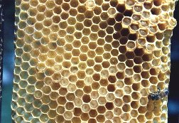

Nel periodo produttivo la vita media dell'ape operaia non supera le 4-6 settimane. E' necessario quindi un continuo ricambio di api e tutta l'attività dell'alveare si svolge in funzione dell'allevamento di nuovi individui. Lo stadio di uovo è di 3 giorni. L'ape operaia ha uno stadio larvale che dura 8-9 giorni e nasce dopo 21 giorni dalla deposizione dell'uovo. Il fuco ha 10 giorni di stadio larvale e nasce dopo 24. L 'ape regina nasce dopo 16 giorni dalla deposizione dell'uovo.